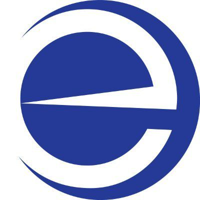

+++
title = "Slovenské elektrárne a.s. - Recruitment Consultant"
slug = "18"
+++

<div class="container mb-5">
    <div class="row justify-content-around">
        <div class="col-6 col-md-2 mt-3"></div>
        <div class="col-md-8">
            <h1>Slovenské elektrárne a.s.</h1>
            <h2>Recruitment Consultant</h2>
            <p>
                <strong>Miesto: </strong>home office/Mochovce<br/>
                <strong>Forma: </strong>živnosť alebo dohoda o vykonaní práce alebo skrátený úväzok na TPP<br/>
                <strong>Flexi faktor: </strong>home office<br/>
                <strong>Plat: </strong>12 €/hodina<br/>
                <strong>Očakávaný nástup: </strong>dohodou, ideálne ASAP<br/>
                <strong>Dátum pridania ponuky: </strong>7.10.2021<br/>
            </p>
            <h2>O firme </h2>
            <p>Sme najväčší výrobca elektriny na Slovensku a jeden z najväčších v strednej Európe. Máme dve jadrové, 31
                vodných, dve uhoľné a dve fotovoltické elektrárne. Ako najväčší súkromný investor na Slovensku, ponúkame
                stabilné zamestnanie a takmer 80-ročné skúsenosti v energetike. Aj keď máme jadrové reaktory a unikátne
                technológie, tým najdôležitejším sú stále naši zamestnanci.
            </p>
            <p>Výrazne prispievame k boju proti klimatickým zmenám, až 95 % elektriny dodávame bez emisií skleníkových
                plynov. Zabránime vypusteniu takého množstva emisií, ako keby sme z ciest odstránili 5,4 milióna
                osobných a nákladných vozidiel. Teda o polovicu viac, než ich dnes skutočne jazdí po Slovensku.
            </p>
            <p>
                Vďaka inováciám a moderným technológiám môžu naši zamestnanci rozvíjať svoj potenciál na rýchlo sa
                meniacom energetickom trhu 21. storočia. Naše jedinečné technológie, ktoré inde na Slovensku nenájdete,
                prispievajú k tomu, že práca u nás je naozaj veľkou výzvou pre každého, a to nielen pre technikov. U nás
                sa totiž môže uplatniť skutočne každý. Okrem jadrových fyzikov či trhových analytikov potrebujeme aj
                také profesie, ako sú potápači či železničiari.
            </p>

            <h2>Náplň práce</h2>
            <ul>
          Na oddelení Ľudských zdrojov na projekte dostavby jadrovej elektrárne je našou každodennou úlohou
                    prepojiť tých najšikovnejších ľudí s tým najvhodnejším pracovným miestom. Potrebujeme k sebe TOP
                    recruitera na dohodu, ktorý nám pomôže hľadať tých najlepších! Ak máš skúsenosti s hľadaním
                    talentov, tak neváhaj a pošli nám svoje CV
                <li>Aktívne vyhľadávanie a oslovovanie kandidátov na vybraných kariérnych portáloch (Profesia,
                    LinkedIn...) a sociálnych sieťach;
                <li>Screening už prihlásených kandidátov a ich selekcia pre príslušných Manažérov, interakcia medzi
                    kandidátmi a Manažérmi;
                <li>Spolupráca a kreatívna podpora pri vytváraní / písaní textov pre publikovane pozície
                <li>Pôsobiť ako kontaktná osoba a koordinátor pre ostatne spolupracujúce agentúry na vyhľadávanie
                    pracovníkov
                <li>Evidencia údajov v databáze kandidátov, aktualizácia a sledovanie stavu výberového procesu;
                <li>Ďalšia administratívna podpora v danej oblasti
            </ul>


            <h2>Požiadavky</h2>
            <ul>
                <li>Min. 2- ročné skúsenosti s výberom zamestnancov na odborne pozície alebo pozície stredného manažmentu (prax z personálnej agentúry výhodou), širšia sieť profesných kontaktov je výhodou
                <li>Anglický jazyk aktívne – B2 / komunikácia so zahraničnými kandidátmi
                <li>Min. SŠ s maturitou
                <li>Kľúčová je pre nás priama skúsenosť s vyhľadávaním a oslovovaním kandidátov primárne na LinkedIn a Profesia, akákoľvek skúsenosť s iným zdrojom či databázou bude pre teba výhodou
                <li>Dobré komunikačné schopnosti, prijemné vystupovanie
                <li>Inovatívne a kreatívne myslenie je veľké plus
            </ul>


            <h2>Ďalší postup</h2>
            <p>Ak vás ponuka zaujala, prihlásiť sa môžete cez tento <a
                    href="https://ats.nalgoo.com/sk/gate/seas/position/52736"
                    target="_blank">link</a></p>

        </div>
        <div class="col-md-2"></div>
    </div>
    <div class="row">
        <div class="col offset-md-2 mt-5">{{< back >}}</div>
    </div>
</div>
